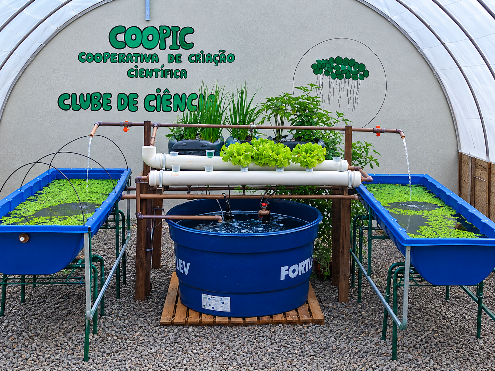
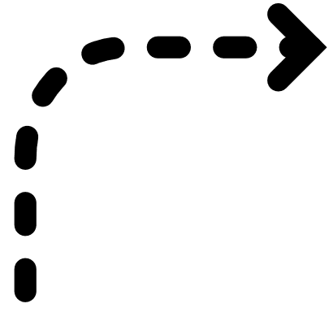
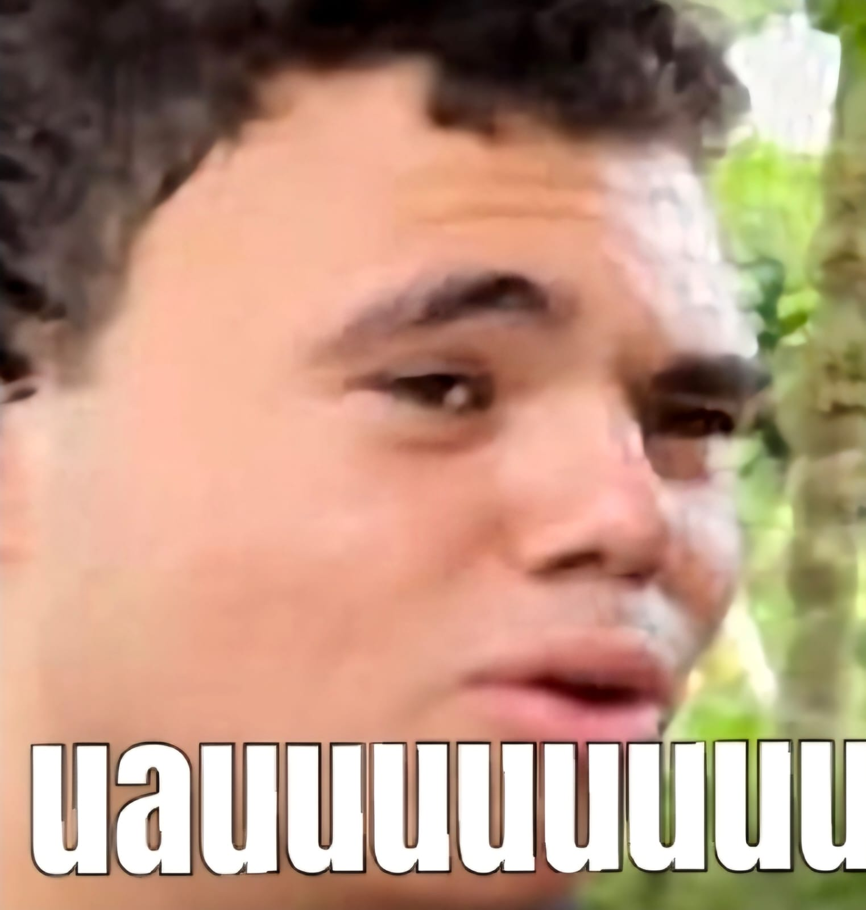
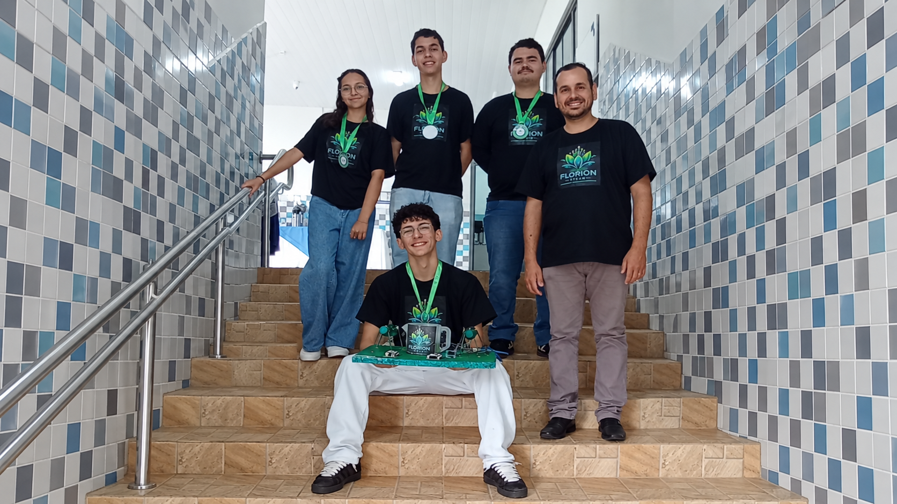

O que é o projeto?
O projeto Florion Tech é um projeto de automação para um sistema de aquaponia que temos em nosso colégio. O projeto consiste em um sistema de automação que controla a temperatura, a umidade e a iluminação do ambiente, além de monitorar o nível de água e nutrientes do sistema de aquaponia. O objetivo do projeto é tornar o sistema mais eficiente e sustentável, além de facilitar o trabalho dos alunos que cuidam do sistema.
Como ele funciona
Ele funciona através de sensores, que manda as informações para uma placa esp32, que envia todos os dados para o nosso banco de dados, que viram as informações que aparecem no nosso site
Aquaponia
Esse é o nosso sistema de aquaponia que temos no colégio, que foi desenvolvido pelo nosso grupo coopic

Nele também temos um projeto de hidroponia imbutido, e também temos um sistema de criação de lentilhas d'água
Como o sistema funciona

🌱🌱🌱
🌱🌱🌱
🌱🌱🌱
Os peixes
🐟
soltam os dejetos na água
➜
Os dejetos
💩
viram adubo para as plantas
➜
As plantas
🌱
purificam a água
➜
A água
💧
retorna para a caixa d'água
➜
e o ciclo recomeça ⟳
Quem Somos
Somos um grupo de alunos do Colégio Estadual Rui Barbosa, que desenvolveu o projeto Florion Tech, um projeto de automação para um sistema de aquaponia. O projeto foi desenvolvido com o objetivo de tornar o sistema mais eficiente e sustentável, além de facilitar o trabalho dos alunos que cuidam do sistema.
Kauan
Igor
Samilly

Guilherme

Heliton
Sobre Nós
Somos um grupo de alunos do colégio Rui Barbosa, que desenvolveu o projeto Florion Tech, um projeto de automação para um sistema de aquaponia. O projeto foi desenvolvido com o objetivo de tornar o sistema mais eficiente e sustentável, além de facilitar o trabalho dos alunos que cuidam do sistema.
Essa é a nossa equipe
